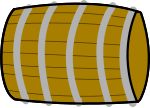

<!DOCTYPE html>
<html lang="en">
<head>
    <meta charset="UTF-8">
    <meta name="viewport" content="width=device-width, initial-scale=1.0">
    <title>Where Does the Barrel Roll?🛢️</title>
    <!-- Favicon with wine glass emoji -->
    <link rel="icon" href="data:image/svg+xml,<svg xmlns='http://www.w3.org/2000/svg' viewBox='0 0 100 100'><text y='0.9em' font-size='90'>🍷</text></svg>">
    
    <!-- Google Fonts: Lora -->
    <link rel="preconnect" href="https://fonts.googleapis.com">
    <link rel="preconnect" href="https://fonts.gstatic.com" crossorigin>
    <link href="https://fonts.googleapis.com/css2?family=Lora:ital,wght@0,400;0,500;0,600;0,700;1,400;1,500;1,600;1,700&display=swap" rel="stylesheet">

    <link rel="stylesheet" href="style.css">
    
    <script src="https://d3js.org/d3.v7.min.js"></script>
</head>
<body>
    <div id="main-layout">
        <aside id="legend">
            <div id="legend-header">
                <div class="sidebar-title">
                    <div class="title-row">
                        <h1>Where Does the Barrel Roll?</h1>
                        <button id="help-btn" class="help-button" title="Help">?</button>
                    </div>
                    <p class="sidebar-desc">Start exploring the trade routes of barrels and spirits by zooming in or clicking on one of the bottons below.</p>
            
            <!-- Tabbed Interface for Countries and Wine Regions -->
            <div id="data-tabs-container">
                <div id="data-tab-buttons">
                    <button class="data-tab-btn" data-tab="countries-tab">Countries with Routes</button>
                    <button class="data-tab-btn" data-tab="wine-regions-tab">Wine Regions</button>
                </div>
                
                <div id="countries-tab" class="data-tab-content">
                    <!-- Countries with routes list will be inserted here by JavaScript -->
                </div>
                
                <div id="wine-regions-tab" class="data-tab-content">
                    <!-- Wine regions list will be inserted here by JavaScript -->
                </div>
            </div>
            
            <div id="tab-controls-content" class="tab-content" style="display: none;">
                </div>
            <div id="legend-content">
                <div class="legend-section">
                    <h2>Map Legend</h2>
                    <div class="legend-item">
                        <span class="legend-swatch legend-distillery"></span>
                        <div class="legend-text">
                            <strong>Distilleries</strong>
                        </div>
                    </div>
                    <div class="legend-item">
                        <span class="legend-swatch legend-port"></span>
                        <div class="legend-text">
                            <strong>Ports</strong>
                        </div>
                    </div>
                    <div class="legend-item">
                        <span class="legend-swatch legend-route"></span>
                        <div class="legend-text">
                            <strong>Shipping Lanes</strong>
                        </div>
                    </div>
                    <div class="legend-item">
                        <span class="legend-swatch legend-country"></span>
                        <div class="legend-text">
                            <strong>Countries with data</strong>
                        </div>
                    </div>
                </div>
            </div>
            
        
        </aside>

        <div id="mapContainer">
            <!-- Zoom Controls (bottom-left, over map) -->
            <div id="zoom-controls" class="zoom-controls">
                <button id="zoom-in" aria-label="Zoom in">+</button>
                <button id="zoom-out" aria-label="Zoom out">−</button>
            </div>
        </div>

        <!-- Floating Cask Statistics Panel (top-right) -->
        <div id="cask-stats-panel" class="info-panel"></div>
    </div>

    <!-- Help Modal -->
    <div id="help-modal" class="modal">
        <div class="modal-content">
            <span class="close">&times;</span>
            <h2>How to Use This Map</h2>
            <p><strong>Rotate the Globe:</strong> Click and drag to rotate the map and view different regions.</p>
            <p><strong>Zoom In/Out:</strong> Use your mouse wheel or trackpad to zoom in and out of the map.</p>
            <p><strong>View Shipping Routes:</strong> Hover over shipping lanes to see trade information including importer, exporter, trade value, and quantity.</p>
            <p><strong>Explore Wine Regions:</strong> Select a wine region from the dropdown to see distilleries and filter related data.</p>
            <p><strong>Port Labels:</strong> When zoomed in, port labels appear on the visible side of the globe. They will hide when viewing the opposite hemisphere.</p>
            <p><strong>Interactive Elements:</strong> Click on countries to zoom in and see their trade routes.</p>
            <hr>
            <h3>Resources</h3>
            <p>Quick links to data and project resources:</p>
            <ul>
                <li><a href="data/trade_data/trade_data.csv" target="_blank">Trade data (CSV)</a></li>
                <li><a href="data/basemap/wineregionseurope.json" target="_blank">Wine regions GeoJSON</a></li>
                <li><a href="data/basemap/ports.geojson" target="_blank">Ports GeoJSON</a></li>
                <li><a href="https://github.com" target="_blank">Project repository (add your repo link)</a></li>
            </ul>
            <p style="font-size:0.95em; color:#666;">Want other resources here? Tell me which links to add and I will update this panel.</p>
        </div>
    </div>

    <script src="js/1map_setup.js"></script>
    <script src="js/2data_manager.js"></script>
    <script src="js/3layer_logic.js"></script>
    <script src="js/6distillery_layer.js"></script>
    <script src="js/4ui_controls.js"></script>
    <script src="js/7wine_regions_list.js"></script>
    <script src="js/5main.js"></script>
</body>
</html>